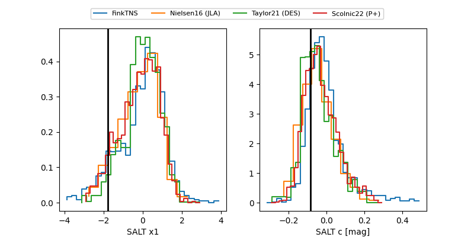

FINK: ZTF25abopzvb
Lasair: ZTF25abopzvb
ALeRCE: ZTF25abopzvb
TNS: 2025xaq
YSE: 2025xaq
ZTF25abopzvb (ztf,fink)
2025xaq (tns,yse)
PS25hid (panstarrs)
equatorial (ra, dec) = (336.6316,+17.23482)
galactic (l, b) = (80.3858,-33.40754)

last atlasc=19.41, atlaso=19.53, ps1::g=19.67, ps1::i=19.60, ps1::r=19.68, ps1::y=20.31, ztfg=19.48, ztfr=19.42
1 atlasc, 1 atlaso, 2 ps1::g, 1 ps1::i, 3 ps1::r, 1 ps1::y, 4 ztfg, 3 ztfr detections